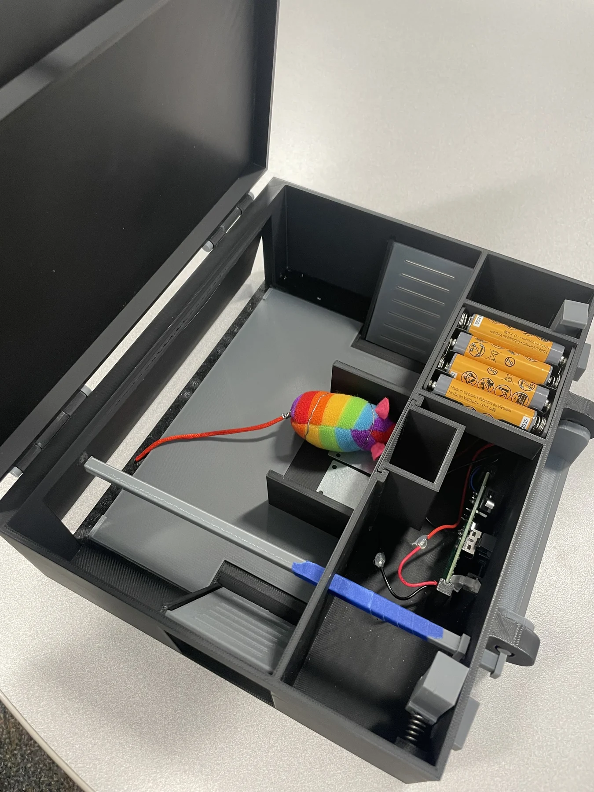
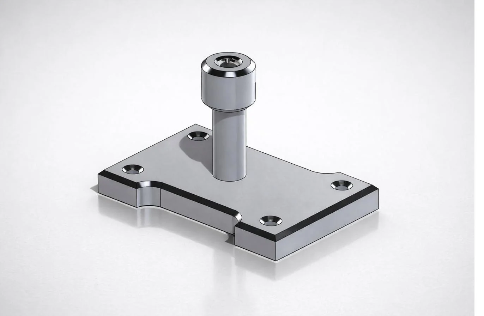
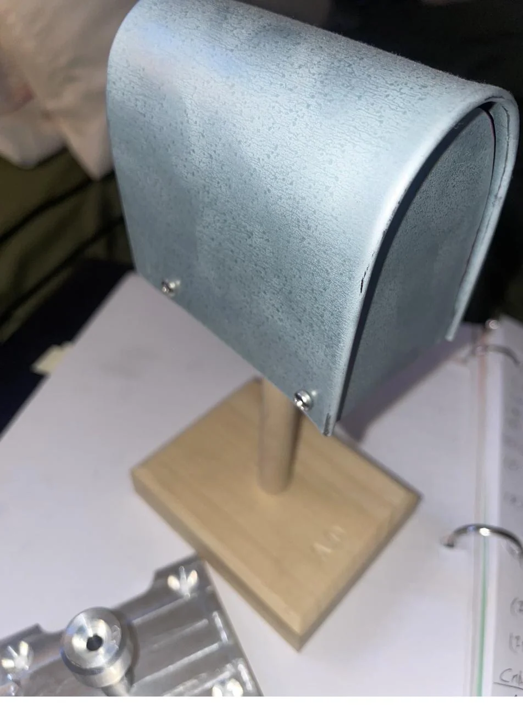
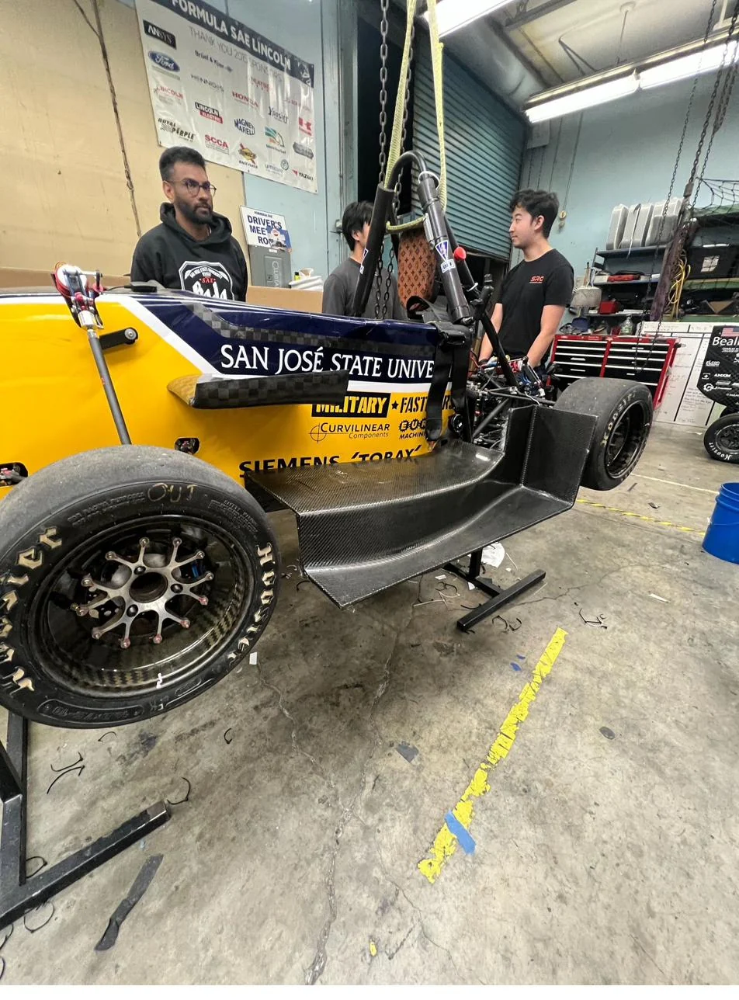
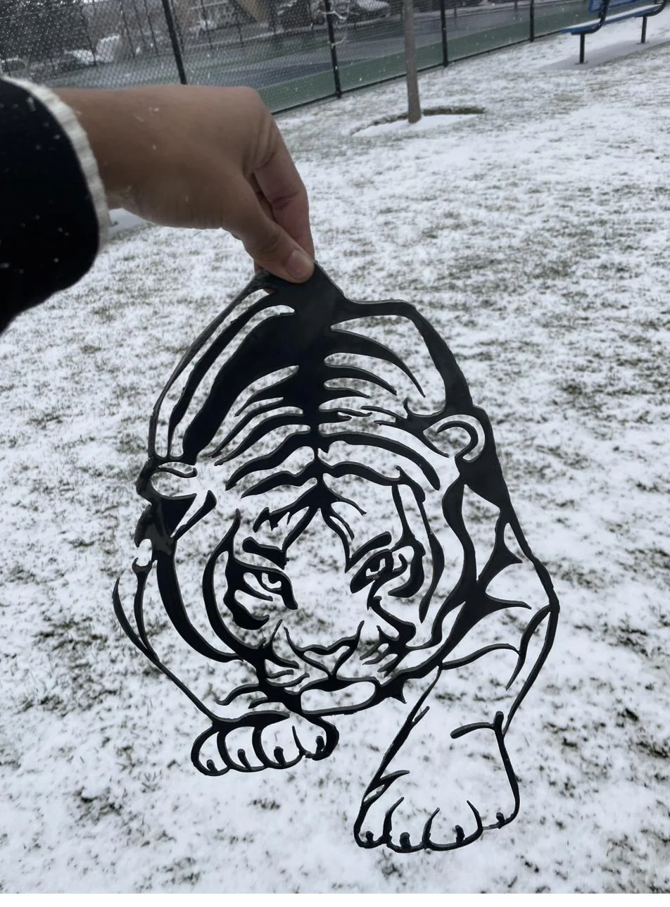

Check what the sensor is actually reading.
Thermogate’s thermistor was picking up heat inside its enclosure. Moving it outboard helped it measure the surrounding air.
Mechanical Engineering at BYU–Idaho · CSWP Certified
I’m Ankit, a mechanical engineering student with experience in CAD, fabrication, and hardware integration. My work spans machined parts, working mechanisms, Arduino controls, and manufacturing documentation.
Graduating December 2026 · Available January 2027 · Open to relocation
References
Feedback from people I’ve worked with on the plant floor, in the classroom, and beyond.
Ankit played a key role in replacing our outdated TWI documents with operator-validated SOPs, and by the end of his internship, I trusted him to help onboard the next intern and carry the project forward with minimal direction.
Ankit has been working as a Teaching Assistant for me over the past year. He has done an excellent job in all aspects of the work! He gets things done efficiently and on time. He does a great job interacting with the students in the classroom and answering all of their questions.
Ankit is curious about everything, even stuff outside engineering. He got me to try changing one thing at a time in how I talk to customers and keep what works. It made me a lot more deliberate. He’s sharp, he actually listens, and he’s always got an idea worth trying.
Selected projects
These projects show what I designed, how I built it, and what changed after testing.
01 / Sensors, Controls & Mechanical Design

02 / Gear Design, Fabrication & Assembly

03 / Mechanism Design & Analysis · Team Project
More from the shop.

A SolidWorks model carried through machining and physical inspection.
0.001 in tolerance
A fabrication project involving metal forming, fastening, and dimensional checks.
±1/32 in fabrication
Six months supporting the wheel and suspension build for San José State’s Formula SAE team.
6 months, wheel + suspension corner
A SolidWorks pattern cut from quarter-inch steel and finished by hand.
0.25 in steel, hand-finishedExperience
How I work
Building and testing show me where a design needs work. These are a few lessons I’ve carried into the next project.
Thermogate’s thermistor was picking up heat inside its enclosure. Moving it outboard helped it measure the surrounding air.
My gearbox looked ready in CAD, but the screw heads interfered during assembly. A countersunk chamfer gave them the clearance they needed.
For the rat trap actuator, I used static FEA to evaluate loading, then cycled the mechanism more than 80 times to check its behavior.
During my internship, I wrote procedures that made machine-floor knowledge easier for the next person to use.
Engineering studies
Coursework in thermodynamics, fluid dynamics, and mechanical design gave me opportunities to investigate problems beyond the physical builds.
View engineering studies →